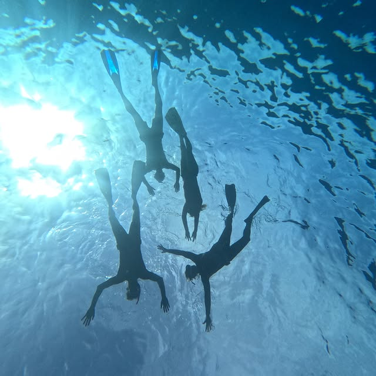
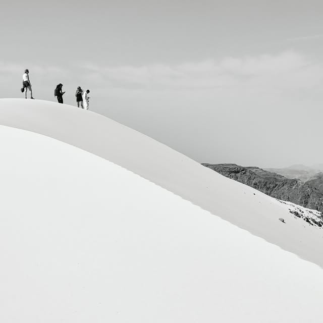
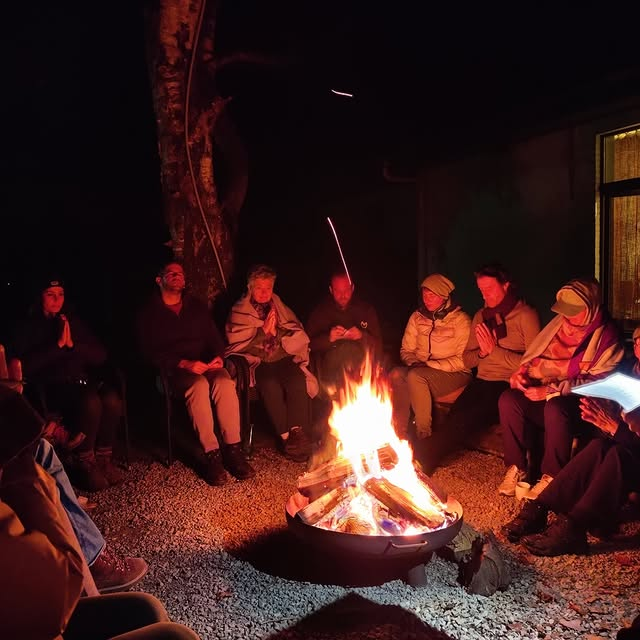
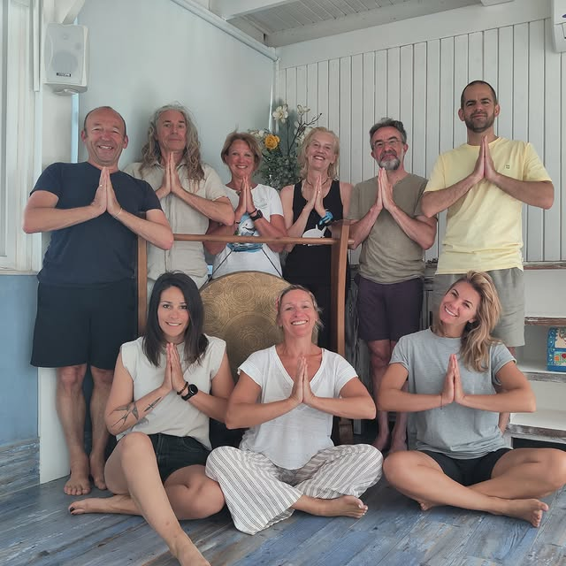

Final recommendationDesign systemPage blueprintsBased on client feedback v2
01 · Final recommendation
An editorial, photo-led site with one warm accent.
The website steps back so the photos (sea, desert, forest, people together) do the talking. A calm bone-white frame, a refined serif, very little text, and a handful of subtle, memorable interactions. Warm and human, never cheap, cliché or busy.
1
Photo first
Every page opens with one full-screen photo (Sansara). Photos are big, square-cornered, uncluttered.
2
Say less
Max ~60 words per block. A headline + two lines + a link. Details live on the retreat page, not the homepage.
3
One accent
Bone, ink and deep-sea night, plus a single ember accent for the cursor dot, the guiding line and labels. No pastels, no coffee tones.
The next retreat is always one click away: hero, nav and a sticky “Inschrijven” on the retreat page.
02 · From current build to v2
What we keep, what we drop.
The current site (theme “boheme”: coral/sky/yellow, 2.5px borders, hard offset shadows, marquee, tribal dividers) is exactly the “playful” the client is moving away from. The content model and pages stay; the skin changes.
Home stays short; these belong on the retreat page.
03 · Signature elements
Six details people will remember.
Chosen from the client's favourites, filtered on “subtle, usable, fits a yoga brand”. Together they replace all decoration.
Full-screen opening photo
Each page starts with one big photo with a short serif title over it, as at the top of this page. On Home it may be a 10–15 s silent loop that looks like a still (sea surface, flame, sand).
A 1px ember line runs down the page, connecting photo to photo and section to section (see between hero and section 01). It draws itself as you scroll. Our only “drawing”.
Flyward line · Topography orange line · Yolan's line on Milo
Circle-and-dot cursor
A thin ring with an ember dot; grows over photos and links. Desktop only, hidden for touch and reduced motion. Move your mouse on this page to try it.
Sansara “goed gevonden”
Past retreats in black & white
Coming retreats in colour; passed retreats in B&W that bloom into colour on hover. Instantly readable, and it gives the archive a quiet, grainy character.
Old Tom portfolio + grain
Hover reveals
Class photos reveal “wat · voor wie · waar” on hover (tap on mobile). Section titles can swap background/text colour on hover in the retreat list.
Client's own Lessen idea · Old Tom insights · Bureau Rouge
Object → face (Team)
A drawn yoga block and a diving mask; on hover, Rita's and Philippe's faces appear. Personal without being “all about me”.
Estudio Niksen caps, reversed (PH's idea)
Deliberately not doing
Rotating cubes / photo wheels (Corentin): impressive, not usable
Letter-scramble titles (R-100): too techy
Logo-shaped cursor (Samoondoh): impractical
Auto-scrolling photo walls (Alex Zarour): takes control from the visitor
Zooming star transitions (Collection Industries): “te druk”
Torn photo edges everywhere (Flyward): risks “boho”. At most once, as the hero → first section transition
Stark white background (Beats in Space): “maar niks”
A shop: not in scope for launch; revisit later
04 · Sitemap & page blueprints
Seven pages. Each one starts with a photo.
The structure doc mentions 10 tabs but describes 8. Recommendation: 6 menu items + logo (Home), with a page per retreat. “Inschrijven” stays visible as a button in the nav.
Nav: Logo · Retreats · Lessen · Private coaching · Over ons · Gallery · Contact [Inschrijven]NL / EN
Home
/
Full-screen photo/loop + one line: “Beyond the mat, into the moment”
Next retreat: big card, date, place, “Ontdek” (retreats on top, as asked)
Who we are in 1 paragraph: Yoga, Zen & Tonic background
Retreats: 3 cards (coming in colour, latest passed in B&W)
Lessen: 4 class tiles + “where” line
2–3 short testimonials, one at a time, large serif quote
Rita & Philippe: one photo, two lines, link to Over ons
Follow us: Instagram strip (6 photos) + FB link · Footer with newsletter “Hou me op de hoogte”
Wat kan je volgen: 4 tiles (Ashtanga, Vinyasa, Pilates Mat, Pilates Reformer), hover → wat / voor wie / waar
Waar: 3 studios (Antwerp Yoga, Studio Pili, Magnolia), photo + address + external link
Weekplanning: simple Mon–Sun grid, one row per class
Private coaching
/coaching
Opening photo of Rita with a client
3 short blocks: Wat · Wat kan je verwachten · Duur & prijs
2 photos side by side + “Plan een gesprek”
Over ons
/over-ons
Opening photo of Rita & Philippe
Object → face tiles, 3–4 sentences each
Optional: “Wat ons drijft”: 3 principles with a slow video (Flyward principles)
Gallery
/gallery
Filters: Alles · Retreats · Lessen · Natuur (Sansara)
Mosaic with small captions: place + date (booking.com)
Click → full-screen lightbox, arrow keys / swipe
Contact
/contact
Split screen: photo left, form right (naam, e-mail, bericht)
E-mail + GSM as plain clickable text
“Hou me op de hoogte van de volgende retreat” checkbox / button
05 · Photography & copy
The photos are the design.
A photo-first site is only as good as its photos. This is the most important input from the client.
⚠ Blocker: resolution
Every photo we have now is 640 × 640 px (Instagram exports). A full-screen hero needs ≥ 2400 px wide, cards ≥ 1200 px. Ask for originals from phones/cameras, or plan a half-day shoot at the next retreat.
Photo rules
Real moments, real people, natural light. No stock, no “cliché yoga” poses on a beach
Landscape for heroes; 4:5 portrait for cards
One consistent grade: warm-neutral, slightly lifted blacks, no heavy filters
B&W with grain only for passed retreats and archive
Leave quiet space (sky, sea, sand) where a title can sit
Copy rules
Dutch first, English toggle. Tone: warm, direct, a wink. “Geen zweverig gedoe.”
Headline ≤ 8 words. Block ≤ 60 words. One idea per block
No emoji in body copy (fine on socials)
Labels in small caps; numbers and dates always concrete (“9–16 mei 2026”, “max. 8”)
Talk about the experience, not about us (kjero / Myrna feedback)

✓ Hero-worthy: one subject, depth, space for a title

✓ Archive B&W: graphic, calm

✓ Mood: people together, real light

✗ Group-posing snapshot: fine for Gallery, not for a hero
06 · Design system
Tokens, type and components.
Everything on this page is built with these tokens, so what you see is the system. Copy the CSS block at the end straight into app/styles.
Colour
Neutral, warm and quiet, so photos carry the colour. One accent, used sparingly (≈ 2% of any screen).
Paper--paper #F4F1ECPage background. Warm bone, not stark white.
Paper 2--paper-2 #EAE5DDAlternate sections, image placeholders.
Ink--ink #1A1917Text, primary buttons. 15.6:1 on paper.
Ink soft--ink-soft #5E5A54Secondary text. 6.1:1 on paper (AA).
Night--night #0F1A1DDark sections (deep sea). Text #E9E6E0.
Ember--ember #D4552BThe accent. Cursor dot, guiding line, labels, hover. 3.6:1: large text / graphics only.
Proportion per screen (excluding photos): paper 62 · paper-2 14 · ink 12 · night 10 · ember 2.
Typography
Instrument Serif for display: elegant, editorial, a little warmth (close to Flyward / Sansara). Hanken Grotesk for everything else: clean and already loaded in the project. Both free on Google Fonts.
Display --fs-display clamp(3.2–7rem) / 1.05
Dieper ademen
H1 --fs-h1 clamp(2.4–4.2rem)
Yoga & Freediving in Dahab
H2 --fs-h2 clamp(1.9–2.8rem)
De retreat in een notendop
H3 --fs-h3 1.5rem
De plek: Lighthouse Bay
Lead 1.25rem / 1.55 · ink-soft
Een week om te bewegen, te vertragen en jezelf helemaal op te laden.
Body --fs-body 17px / 1.65 max 62ch
Ooit een rustig bedoeïenendorp, nu dé freedive-hoofdstad van de wereld. In mei is het hier perfect: warm weer, kalme zee en die relaxte Dahab-vibe.
Label 12px · 600 · +0.16em · caps · ember
Volgende retreat
Small / meta 14px · ink-soft
9–16 mei 2026 · Dahab, Egypte · max. 8 deelnemers
Space & grid
8-point scale. Sections breathe: --section = 96–176px vertical padding. Photos may go full-bleed; text never exceeds 62 characters per line.
--s-14
--s-28
--s-312
--s-416
--s-524
--s-632
--s-748
--s-864
--s-996
--s-10144
12 columns, gap 16px, max width 1320px, side gutter 20–56px.
Replaces the theme variables in app/styles/styles-v3.css. Fonts: swap the Google Fonts link in app/layout.tsx for Instrument+Serif:ital@0;1&family=Hanken+Grotesk:wght@400;500;600.